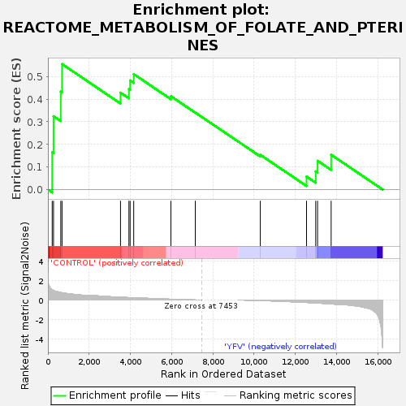
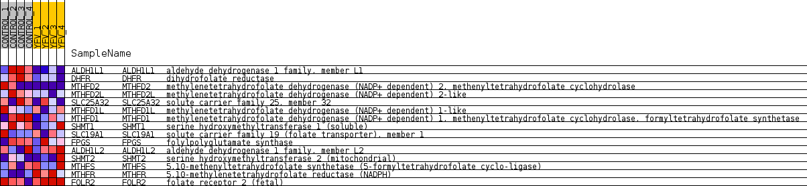
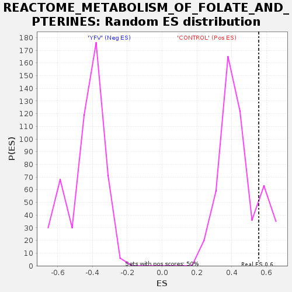

| Dataset | MATRIZ_GSE99081_collapsed_to_symbols.gsea_CLASE_99081.cls#CONTROL_versus_YFV |
| Phenotype | gsea_CLASE_99081.cls#CONTROL_versus_YFV |
| Upregulated in class | CONTROL |
| GeneSet | REACTOME_METABOLISM_OF_FOLATE_AND_PTERINES |
| Enrichment Score (ES) | 0.5552773 |
| Normalized Enrichment Score (NES) | 1.2762372 |
| Nominal p-value | 0.106 |
| FDR q-value | 0.9309189 |
| FWER p-Value | 1.0 |

| SYMBOL | TITLE | RANK IN GENE LIST | RANK METRIC SCORE | RUNNING ES | CORE ENRICHMENT | |
|---|---|---|---|---|---|---|
| 1 | ALDH1L1 | aldehyde dehydrogenase 1 family, member L1 | 208 | 1.057 | 0.1650 | Yes |
| 2 | DHFR | dihydrofolate reductase | 273 | 0.972 | 0.3247 | Yes |
| 3 | MTHFD2 | methylenetetrahydrofolate dehydrogenase (NADP+ dependent) 2, methenyltetrahydrofolate cyclohydrolase | 623 | 0.773 | 0.4333 | Yes |
| 4 | MTHFD2L | methylenetetrahydrofolate dehydrogenase (NADP+ dependent) 2-like | 685 | 0.747 | 0.5553 | Yes |
| 5 | SLC25A32 | solute carrier family 25, member 32 | 3521 | 0.287 | 0.4288 | No |
| 6 | MTHFD1L | methylenetetrahydrofolate dehydrogenase (NADP+ dependent) 1-like | 3929 | 0.248 | 0.4455 | No |
| 7 | MTHFD1 | methylenetetrahydrofolate dehydrogenase (NADP+ dependent) 1, methenyltetrahydrofolate cyclohydrolase, formyltetrahydrofolate synthetase | 3987 | 0.243 | 0.4829 | No |
| 8 | SHMT1 | serine hydroxymethyltransferase 1 (soluble) | 4162 | 0.230 | 0.5108 | No |
| 9 | SLC19A1 | solute carrier family 19 (folate transporter), member 1 | 5965 | 0.079 | 0.4130 | No |
| 10 | FPGS | folylpolyglutamate synthase | 7147 | 0.003 | 0.3408 | No |
| 11 | ALDH1L2 | aldehyde dehydrogenase 1 family, member L2 | 10300 | -0.045 | 0.1540 | No |
| 12 | SHMT2 | serine hydroxymethyltransferase 2 (mitochondrial) | 12542 | -0.249 | 0.0579 | No |
| 13 | MTHFS | 5,10-methenyltetrahydrofolate synthetase (5-formyltetrahydrofolate cyclo-ligase) | 12988 | -0.299 | 0.0807 | No |
| 14 | MTHFR | 5,10-methylenetetrahydrofolate reductase (NADPH) | 13078 | -0.311 | 0.1275 | No |
| 15 | FOLR2 | folate receptor 2 (fetal) | 13736 | -0.400 | 0.1543 | No |

